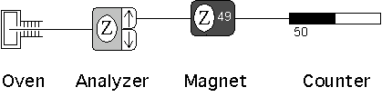
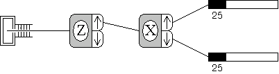
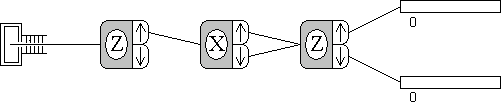
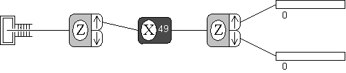

Notes for SPINS
program
Spins is an interactive computer program that
simulates Stern-Gerlach measurements on spin 1/2 and spin 1
particles. The original Macintosh version was written by D. V.
Schroeder (see Am. J. Phys. 61, 798 (1993)). The Java
version is very similar. In each case, an experiment consists of a
few simple components that are controlled with menu and/or mouse
commands.

- The components can be moved using "click
and drag" and can be connected by clicking on the output of one
component (when the arrow appears) and dragging to the input of
another. To disconnect components, just click on the output
arrow.
- The multiple outputs of an analyzer can be
combined at the input of the next component, which allows for
making interferometers.
- Each analyzer and magnet can be aligned
along the x, y, or z axes by clicking on the letter. There is also a
general direction, which is determined by the polar angle theta
and the azimuthal angle phi. The angles are set under the
Design
menu.
- The strength of the magnetic field can be
increased by clicking on the number (0-99).
- Extra components can be added under the
Design menu
(or with keystrokes, e.g., ctrl-n for a new
analyzer).
- Commands under the Control menu allow you to
start and stop the experiment, reset the counters, and run the
experiment a given number of times (i.e., number of atoms
out of the oven). In Watch mode, a light source detects which output of the
analyzer the atoms go through, which is useful to do in
interferometer experiments.
- The Initialize menu allows
you to choose the initial state of the atoms out of the oven.
Unknown
states represent specific state vectors, which can be determined
by experiment; Random means each atom has an equal probability of having
any of the 2 or 3 possible spin projections available at the first
analyzer. User State allows the user to enter the state vector components
in a selectable basis; the program will properly normalize
them.
- Some simple experiments are shown
below.

The simplest Stern-Gerlach experiment to measure the spin
projection along the z-axis. This experiment is ready to go when the
program starts up.

An experiment for successive measurement of spin projections.

An interference experiment with spin 1/2 particles.

An experiment to study spin 1/2 particles in a magnetic field.